Lab 3 Exercise 3.1 Nulling Filters for Rejection
Contents
3.1 part A
In part A we are tasked with finding the coefficients associated with the nulling filters that will force the frequency response of a desired frequency to 0 which in this case is 0.44pi and 0.7pi. Associated plots of magnitude and phase are presented to show the filters' efficacy.
clear,clc set(groot, 'defaultLinelinewidth',3) % plotting preference ww = -pi:(pi/100):pi; bk1 = [1 -2*cos(0.44*pi) 1] % Filter coefficients of filter 1 bk2 = [1 -2*cos(0.7*pi) 1] % Filter coefficients of filter 2 filter1 = freqz(bk1,1,ww); filter2 = freqz(bk2,1,ww); figure subplot(4,1,1); plot(ww,abs(filter1),'c') title('0.44pi') xlabel('Frequency') ylabel('Magnitude') set(gca,'color','k')%Plots magnitude response of filter 1 subplot(4,1,2); plot(ww,angle(filter1),'c') title('0.44pi') xlabel('Frequency') ylabel('Phase') set(gca,'color','k')%Plots phase response of filter 1 subplot(4,1,3); plot(ww,abs(filter2),'c') title('0.7pi') xlabel('Frequency') ylabel('Magnitude') set(gca,'color','k')%Plots magnitude response of filter 2 subplot(4,1,4); plot(ww,angle(filter2),'c') %Plots phase response of filter 2 title('0.7pi') xlabel('Frequency') ylabel('Phase') set(gcf,'InvertHardcopy','off','color','w','Units','normalized','OuterPosition', [0 0 1 1]) set(gca,'color','k')
bk1 =
1.0000 -0.3748 1.0000
bk2 =
1.0000 1.1756 1.0000
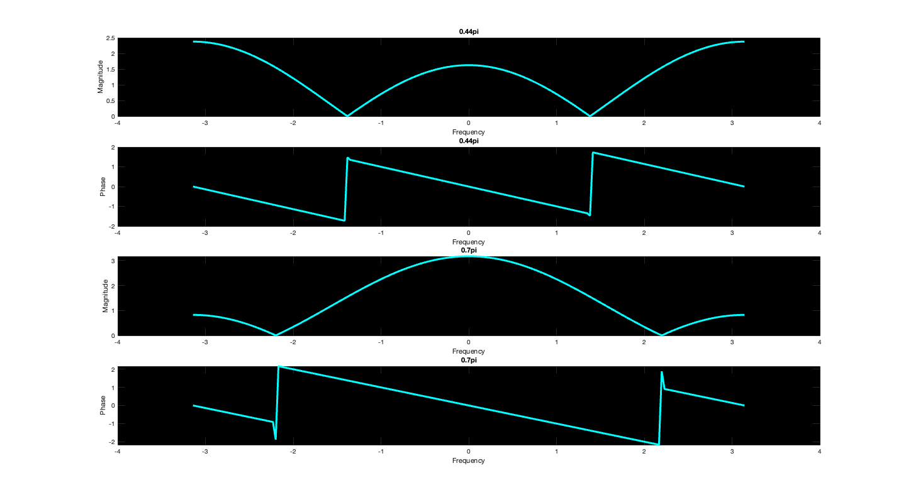 3.1 Part B
In Part B we are tasked with generated an input signal from a given equation for the first 150 samples
nn = 0:149; xn = 5*cos(0.3*pi.*nn) + 22*cos((0.44*pi.*nn) - (pi/3)) + 22*cos((0.7*pi.*nn)- (pi/4)); %Input signal figure stem(nn,xn(nn+1),'c','LineWidth',3) title("Sum of Sinusoids") xlabel('Time Index (n)') ylabel('x(n)') set(gcf,'InvertHardcopy','off','color','w','Units','normalized','OuterPosition', [0 0 1 1]) set(gca,'color','k')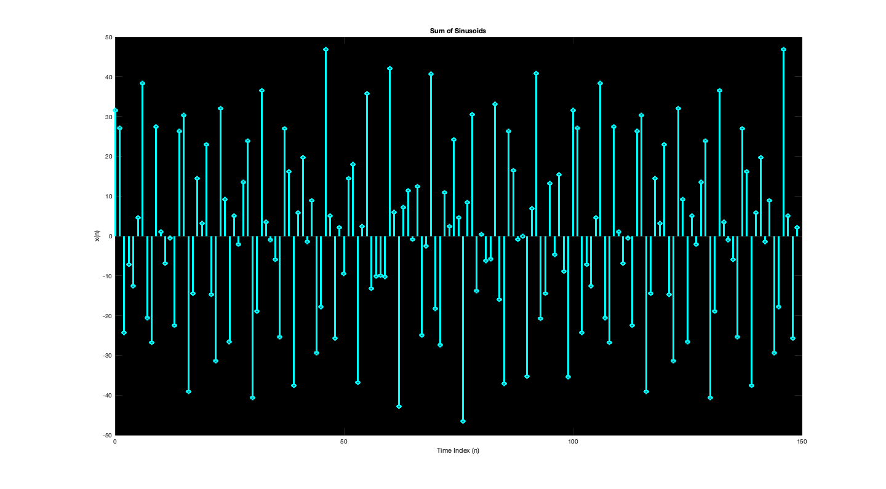
3.1 Part C
Part C is the convolution of the input signal from Part B with the nulling filters created in Part A
filter = conv(bk1,bk2); cascfilt = conv(filter, xn);
3.1 Part D
Calculation by hand included as PDF within folder. Shown below is the plot of the first 40 points for the output data from Part C that was passed through the filter from Part A
n = [1:40]; figure plot(n-1, cascfilt(n)-1,'c') % Plots cascade title('Filtered Output of Sum of Sinusoids') xlabel('n') ylabel('x(n)') set(gcf,'InvertHardcopy','off','color','w','Units','normalized','OuterPosition', [0 0 1 1]) set(gca,'color','k')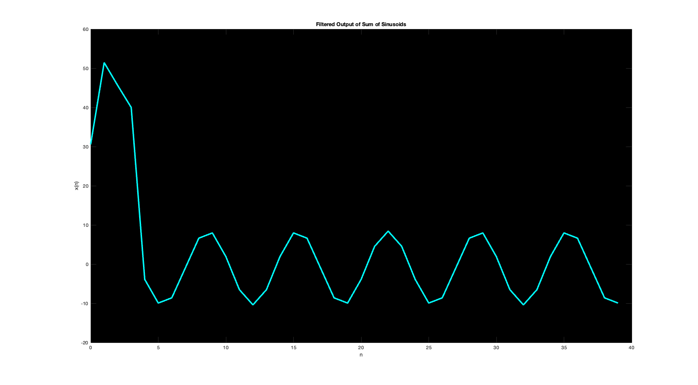
3.1 Part E
Part E provides a comparision of the output signal of the sinususoidal input against the mathematically derived output for points 5 - 40.
n1 = [5:40]; n2 = [6:41]; yn = 9.4*cos(0.3*pi*n1 - 1.88) + 0.001*cos(0.44*pi*n1 - 0.7) + 0.0007*cos(0.7*pi*n1 + 0.471); figure % filtered ouput subplot(2,1,1) plot(n1,cascfilt(n2),'-c*') title('Filtered Output') ylim([-11 10]) set(gca,'color','k') subplot(2,1,2) % mathematically derived output plot(n1,yn,'-c*') ylim([-11 10]) title('Mathematical Formula') set(gcf,'InvertHardcopy','off','color','w','Units','normalized','OuterPosition', [0 0 1 1]) set(gca,'color','k')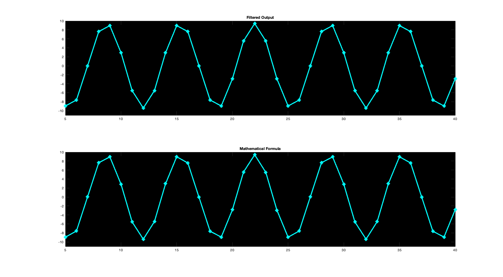
3.1 Part F
% The output signal is different for the first few points because the filter is causal (depends only and past and present inputs). % It takes five points [0-4] for the full filter to affect the value of the sinusoid. % The length of the filter is five which is one less than the combined sum % of the lengths of the two nulling filters (each of length 3).
Simple Bandpass Filter Design: Lab P-12: 3.2 Lab Exercise
3.2 (a)
This section of code creates the filter h, with a cut-off frequency of 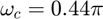, using the equation:
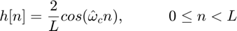
where L = 10. It create 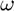 from 0 to 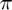, with spacing of 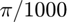. It then calls the function 'fourier_transform' to get H, the frequency response of the filter. 'fourier_transform' is a custom function that does the same thing as 'freqz'. 'freqz' was not used because it is not a built in function of MATLAB.
The code then finds the gain of the filter at 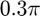, 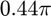, and 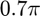. It does so by finding the index of that matches the three frequencies, and finding the magnitude of H at those indices.
clear; omega_cutoff = 0.44*pi; L = 10; n_L10 = 0:(L-1); h_L10 = (2/L)*cos(omega_cutoff * n_L10); w = 0:(pi/1000):pi; H_L10 = fourier_transform(h_L10,n_L10,w); %Gain of the filter at different frequencies. gain_1 = abs(H_L10(round(w,4) == round(0.3*pi, 4))); %gain_1 is at 0.3*pi gain_2 = abs(H_L10(round(w,4) == round(0.44*pi, 4))); %gain_2 is at 0.44*pi gain_3 = abs(H_L10(round(w,4) == round(0.7*pi, 4))); %gain_3 is at 0.7*pi disp("The gain at 0.3*pi is:"); disp(gain_1); disp("The gain at 0.44*pi is:"); disp(gain_2); disp("The gain at 0.7*pi is:"); disp(gain_3);
The gain at 0.3*pi is:
0.2836
The gain at 0.44*pi is:
1.0961
The gain at 0.7*pi is:
0.2861
3.2 (b)
This section of code creates h for three different L's, L = 10, 20 & 40. It finds the frequency response for all three versions using the 'fourier_transform' function. It then finds the passband by using the 'find' function to find the indices of H where H is greater than 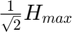. It also finds the stopband where H is less than 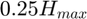. It calculates the width of the passband and plots the frequency response, highlighting where the passband and stopband are.
%%%%%%%%%% % L = 10 % %%%%%%%%%% passband_indices_L10 = find(abs(H_L10) >= (1/sqrt(2))*max(abs(H_L10))); stopband_indices_L10 = find(abs(H_L10) < 0.25*max(abs(H_L10))); passband_L10 = w(passband_indices_L10); passbandWidth_L10 = passband_L10(end) - passband_L10(1); %%%%%%%%%% % L = 20 % %%%%%%%%%% L = 20; n_L20 = 0:(L-1); h_L20 = (2/L)*cos(omega_cutoff * n_L20); H_L20 = fourier_transform(h_L20,n_L20,w); passband_indices_L20 = find(abs(H_L20) >= (1/sqrt(2))*max(abs(H_L20))); stopband_indices_L20 = find(abs(H_L20) < 0.25*max(abs(H_L20))); passband_L20 = w(passband_indices_L20); passbandWidth_L20 = passband_L20(end) - passband_L20(1); %%%%%%%%%% % L = 40 % %%%%%%%%%% L = 40; n_L40 = 0:(L-1); h_L40 = (2/L)*cos(omega_cutoff * n_L40); H_L40 = fourier_transform(h_L40,n_L40,w); passband_indices_L40 = find(abs(H_L40) >= (1/sqrt(2))*max(abs(H_L40))); stopband_indices_L40 = find(abs(H_L40) < 0.25*max(abs(H_L40))); passband_L40 = w(passband_indices_L40); passbandWidth_L40 = passband_L40(end) - passband_L40(1); %%%%%%%%%%%%%%%%%%%%%%%%%%%%%%%%%%%%%%%%%%%%%%%%%%%%%%%%%% % Plotting the Passband and Stopband of L = 10, 20, & 40 % %%%%%%%%%%%%%%%%%%%%%%%%%%%%%%%%%%%%%%%%%%%%%%%%%%%%%%%%%% figure; subplot(3,1,1); plot(w,abs(H_L10)); hold on; plot(w(passband_indices_L10), ones(1,length(passband_indices_L10))*(1/sqrt(2))*max(abs(H_L10)), '.r'); plot(w(stopband_indices_L10), ones(1,length(stopband_indices_L10))*0.25*max(abs(H_L10)), '.b'); legend("","Passband", "Stopband"); title("Frequency Response, L=10"); xlabel("\omega (radians)"); ylabel("Magnitude"); hold off; subplot(3,1,2); plot(w,abs(H_L20)); hold on; plot(w(passband_indices_L20), ones(1,length(passband_indices_L20))*(1/sqrt(2))*max(abs(H_L20)), '.r'); plot(w(stopband_indices_L20), ones(1,length(stopband_indices_L20))*0.25*max(abs(H_L20)), '.b'); legend("","Passband", "Stopband"); title("Frequency Response, L=20"); xlabel("\omega (radians)"); ylabel("Magnitude"); hold off; subplot(3,1,3); plot(w,abs(H_L40)); hold on; plot(w(passband_indices_L40), ones(1,length(passband_indices_L40))*(1/sqrt(2))*max(abs(H_L40)), '.r'); plot(w(stopband_indices_L40), ones(1,length(stopband_indices_L40))*0.25*max(abs(H_L40)), '.b'); legend("","Passband", "Stopband"); title("Frequency Response, L=40"); xlabel("\omega (radians)"); ylabel("Magnitude"); hold off; disp("The passband width when L=10 is:"); disp(passbandWidth_L10 + " radians"); disp("The passband width when L=20 is:"); disp(passbandWidth_L20 + " radians"); disp("The passband width when L=40 is:"); disp(passbandWidth_L40 + " radians");
The passband width when L=10 is: 0.50894 radians The passband width when L=20 is: 0.27332 radians The passband width when L=40 is: 0.13195 radians

When L doubles, the bandwidth is halfed. When L halves, the bandwidth of the filter doubles.
3.2 (c)
The frequencies in the range 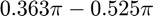 radians are passed by the L=10 filter. Frequencies that have a higher magnitude in the frequency response of the filter, such as the frequency 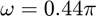, will have a higher gain and therefore be passed through the filter. Frequencies that have a lower magnitude in the frequency response of the filter, such as  & 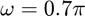, will have a lower gain and will be attenuated by the filter.
& 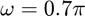, will have a lower gain and will be attenuated by the filter.
3.2 (d)
This sections designs a filter that will pass the frequency , but will block everything below and everything above by at least a factor of 10. It does this by creating a 'for' loop and incrementing L until the magnitude at all of the frequencies below and above is below 0.1.
wIndex_0_3 = find(round(w,4) == round(0.3*pi,4)); wIndex_0_7 = find(round(w,4) == round(0.7*pi,4)); for L_loop = 1:50 n = 0:(L_loop-1); h = (2/L_loop)*cos(omega_cutoff*n); H = fourier_transform(h,n,w); gains_less_than_0_3 = abs(H(1:wIndex_0_3)); gains_greater_than_0_7 = abs(H(wIndex_0_7:end)); reducedCheck_lower = gains_less_than_0_3 > 0.1; reducedCheck_higher = gains_greater_than_0_7 > 0.1; numFreqTooHigh_lower = sum(reducedCheck_lower); numFreqTooHigh_higher = sum(reducedCheck_higher); if((numFreqTooHigh_lower == 0) && (numFreqTooHigh_higher == 0)) break; end end disp("The minimum L that will reduce all frequencies below 0.3*pi and above 0.7*pi by a factor of 10 is L=" + L_loop);
The minimum L that will reduce all frequencies below 0.3*pi and above 0.7*pi by a factor of 10 is L=37
3.2 (e)
This block of code filters the "sum of 3 sinusoids" signal from section 3.1. It then plots 100 points from both the original signal and the filtered signal.
%Input Signal from 3.1(b) n_x = 0:149; x = 5*cos(0.3*pi*n_x) + 22*cos(0.44*pi*n_x - pi/3) + 22*cos(0.7*pi*n_x - pi/4); %Filtering the Signal filtered_X = conv(h,x); %Plotting 100 points of the signals figure; subplot(2,1,1); plot(x(1:100)); title("x(n), Sum of 3 Sinusoid Signals"); xlabel("Samples"); ylabel("Amplitude"); subplot(2,1,2); plot(filtered_X(length(h):length(h)+99)); title("Filtered x(n)"); xlabel("Samples"); ylabel("Amplitude");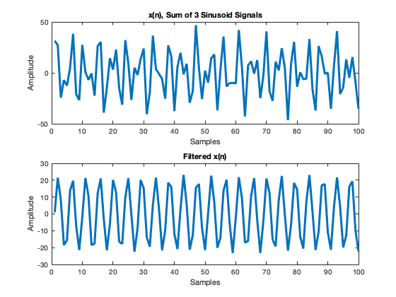
In the original signal x(n), the plot shows a signal with multiple frequencies. The plot of the filtered x(n) shows a sinusoid with only one frequency. This shows that the filter successfully removed the frequencies at and .
3.2 (f)
This section plots the frequency response of the filter that was designed in part (d).
figure; plot(w, abs(H)); title("Frequency Response of the Filter, L=" + L_loop); xlabel("\omega (radians)"); ylabel("Magnitude");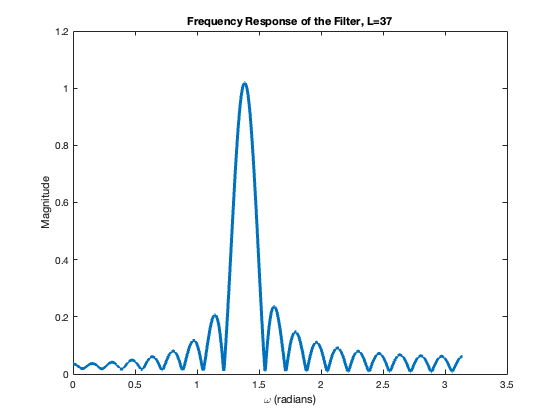
The frequency response shows the magnitude of the filter at each frequency. The magnitude determines the gain that is applied to each frequency of an input signal, or in other words, the output signal is equal to 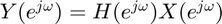. The filter was designed so that the frequencies and would be reduced by a factor of at least 10. This means that the gain of those frequencies should be at least at or below 0.1. This can be seen in the frequency response; the magnitude at and is below 0.1.